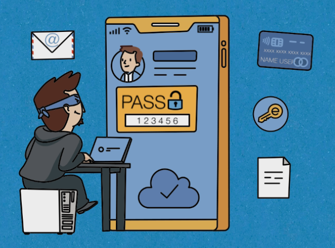
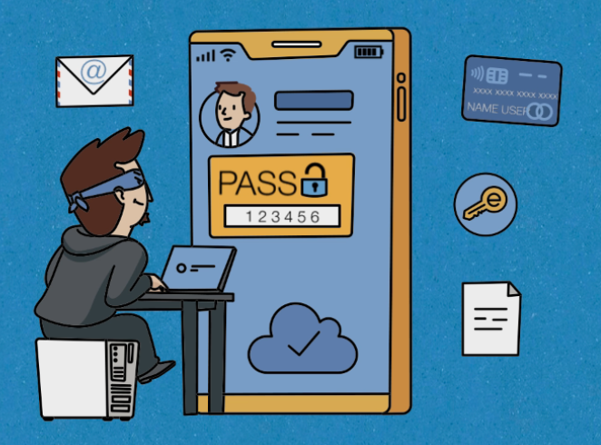

Информационная безопасность
Узнать большеИнформация - это любые сведения, начиная от нашего имени и заканчивая секретными сведениями целых корпораций.
Сегодня информационная безопасность актуальна как никогда, поскольку тот, кто владеет нужной информацией, имеет огромную власть. Узнав вашу должность, ФИО и мероприятия, которые вы посещали, заинтересованные лица запросто обойдут секретаря и придумают хитрую легенду, чтобы связаться с Вами и реалтзовать свои планы.
Взломав пароли от аккаунтов, злоумышленники получат доступ к Вашим данным, смогут скачивать их или совершать рассылки от Вашего имени.
Для совершения информационной атаки злоумышленники используют специальные программы (вредоносные програмные обеспечения) и различные психологические приемы, жертвами которых уже стали миллионы людей.
Электронная почта
Узнать большеСуществуют 2 типа почты: личная и корпоративная. С помощью корпоративной почты мы обсуждаем с коллегами текущие задачи, отправляем друг другу файлы и назначаем встречи. Чаще всего ее используют работники различных компаний. Личную почту обычно используют для регистрациина различных сервисах.
Поскольку информация в электронной переписке может содержать ценные сведения, почта стала объектом информационных атак.

Что такое спам?
Спам - это нежелательные письма или рассылки, на получение которых Вы не давали своего согласия.Вы можете получать спам в почте, мессенджерах, социальных сетях и т.д. Буклеты и визитки, которые кладут под двониками автомобиля, тоже можно считатьразновидностью спама.

Чем опасен спам?
1) Может содержать вредоносные файлы и опасные ссылки.
2) Засоряет почтовый ящик.
3) Может содержать неприемлемый контент.
4) Нарушение работы системы.
5) Потеря данных.
6) Высогательство денег.
Безопасный интернет-серфинг
Узнать большеИнтернет уже давно прочно вошел в нашу жизнь. Из глобальной сети мы узнаем мировые новости, ищем необходимую информацию, совершаем покупки, не выходя из дома, и даже управляем умными устройствами с помощью интернета. Но несмотря на все удобства, которые предоставляет нам всемирная сеть, в руках злоумышленников интернет может стать инструментом информационной атаки. Атаки злоумышленников направлены на кражу конфиденциальной информации компании, пользователя, получение удаленного доступа к компьютеру и денежное вымогательство.
С его помощью создают поддельные страницы сайтов, размещают рекламу и баннеры, перейдя по которым невнимательный пользователь заражает свое устройство вредоносными программами или вводит логины и пароли от реальных сайтов. В результате этого Вы можете потерять важные документы, свои аккаунты от социальных сетей и почты или заблокировать операционную систему. Также злоумышленники могут выложить украденную информацию в открытый доступ, начать Вас шантажировать или использовать Ваши аккаунты, чтобы вымогать деньги из Ваших друзей и знакомых. Скорее всего Вы уже не сможете восстановить потерянную информацию, а чтобы наладить работу системы Вам придется обращаться к специалистам, которые потребуют немалое вознаграждение за свою работу.
Еще один канал утечки информации – это публичные WI-FI сети, которые мы используем для быстрого и бесперебойного доступа к интернету в метро, парках или кафе. Вся информация, которую мы передаем или получаем по общедоступному WI-FI соединению, в любой момент может попасть в руки злоумышленников. Чтобы защитить важную информацию, не пользуйтесь общедоступными WI-FI сетями, а в случаях крайней необходимости используйте только официальные соединения.
Охота на гаджеты
Узнать большеМобильные устройства стремительно стали основным способом нашего взаимодействия с окружающим миром. Они подарили нам возможность совершать банковские операции и покупки в интернете, быстро узнавать официальные новости, делиться своими фотографиями и эмоциями с друзьями и оставаться на связи в любой точке мира, где есть доступ к всемирной сети мобильных операторов. К сожалению, быстрый рост популярности мобильных устройств привел и к появлению новых возможностей для киберпреступников.
 

Им достаточно получить Ваше устройство или выяснить логины и пароли от установленных на нем приложений, чтобы воспользоваться Вашим банковским счетом или получить неавторизованный доступ к аккаунтам почты и социальных сетей для кражи личных данных. Мошенники используют невнимательность и неосведомленность пользователя, поэтому угрозу информационной безопасности при использовании мобильных устройств они реализуют с помощью вредоносных приложений, которые невнимательный пользователь устанавливает самостоятельно, или встроенных в наши гаджеты сервисы.
Через SMS-сообщения, мессенджеры, почту они рассылают спам и фишинговые письма, чтобы заставить пользователя совершить нужное им действие. При подключении к микрофону вашего устройства злоумышленники могут прослушать телефонные разговоры, а с помощью функции геолокации выяснить, где вы находились и куда направляетесь. Получить данные любого размера и важности мошенники могут при подключении к Bluetooth Вашего гаджета и, получив доступ к сервисам облачного хранения информации, которыми Вы пользуетесь, как и миллионы людей. Каждому из нас необходимо знать существующие методы защиты мобильных устройств и соблюдать правила работы с мобильными устройствами. Это позволит сохранить корпоративные и Ваши личные данные, чтобы Вы смогли безопасно пользоваться всеми удобствами современных гаджетов.